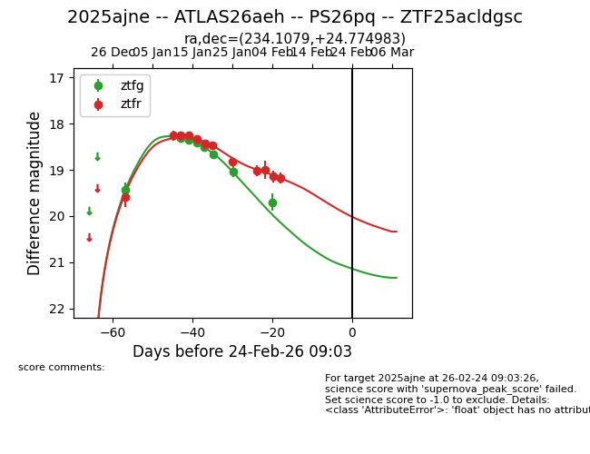
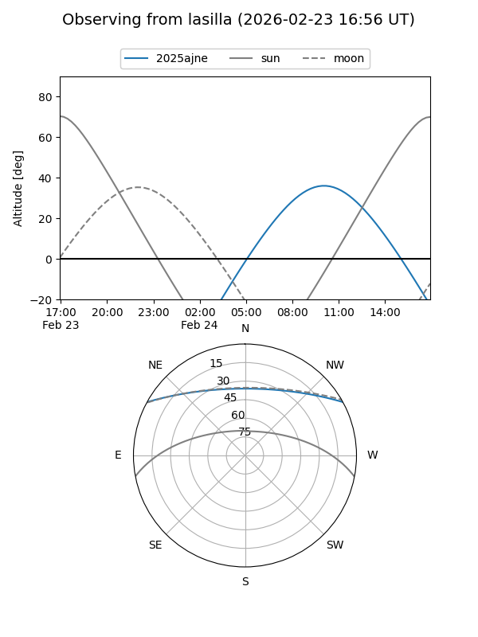
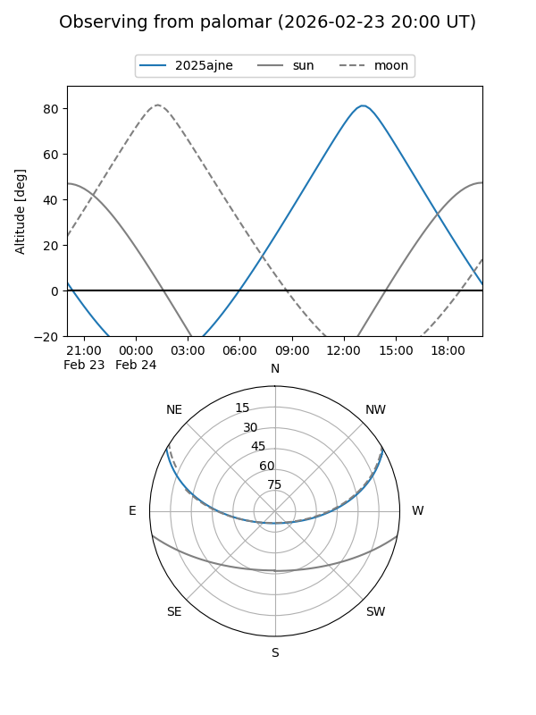
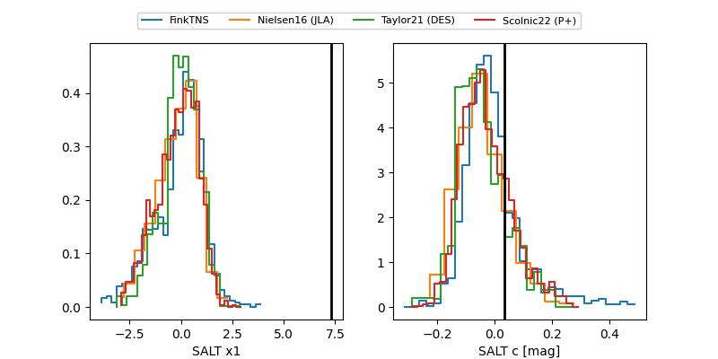

2025ajne
Target 2025ajne at 2026-01-12 13:10
Aliases and brokers:
FINK: link
Lasair: link
ALeRCE: link
TNS: link
YSE: link
alt names
ZTF25acldgsc (ztf,fink_ztf)
2025ajne (tns,yse)
Coordinates:
equatorial (ra, dec) = 234.1079,+24.77498
equatorial (HMS+DMS) = 15:36:25.89,+24:46:29.94
galactic (l, b) = (38.8139,+53.00042)
Flags:
Photometry:
last ztfg=18.32, ztfr=18.25
2 ztfg, 2 ztfr detections
Lightcurve

Visibility


Additional plots
